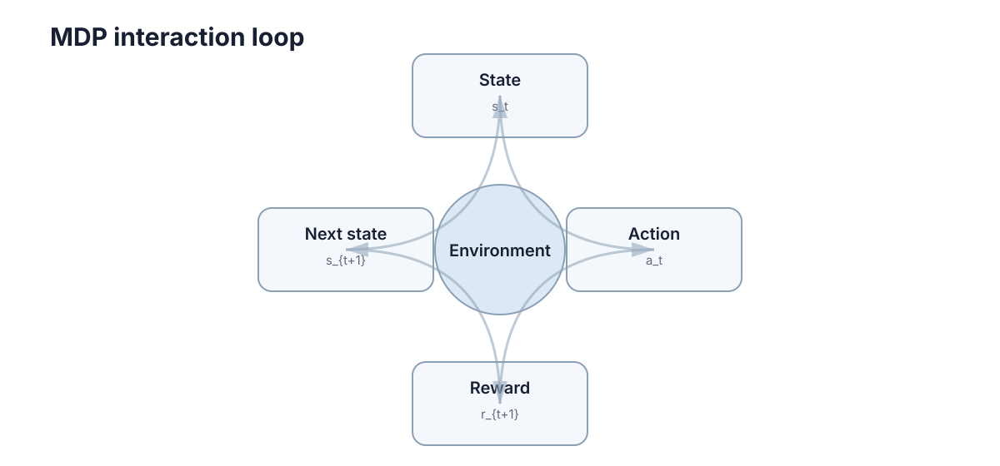

MDP & Bellman Equation
强化学习最核心的问题是：一个决策会改变未来，而未来又会反过来决定现在这个动作到底好不好。 MDP 用一套最小数学结构描述这种"连续决策"，Bellman 方程则把长期回报拆成可以递推计算的一步关系。
本章按"定义 → 目标 → 对象 → 递归 → 最优 → 求解 → 接口 → 边界"的顺序展开：先说明状态必须包含什么，再用五元组定义问题，接着定义真正要最大化的量（回报），引入价值函数把它压缩成一个数，然后推导 Bellman 期望方程与最优方程，给出两种求解算法，最后说明优势函数如何成为策略方法的接口，以及这套分解在什么条件下会失效。

状态的充分性
如果未来只需要由当前状态和当前动作决定，就满足 Markov 性：
这并不表示真实世界"没有历史"，而是要求状态已经包含决策所需的历史信息。注意这是一个关于"给定状态后历史是否还有用"的条件独立性陈述，不是关于环境物理机制的陈述。
判据可以写成一句可检验的话：给定 \(S_t=s\) 与 \(A_t=a\)，奖励与下一状态的联合分布 \(P(r_{t+1},s_{t+1}\mid s,a)\) 是否与 \(t\) 之前的全部历史条件独立。若独立则状态充分；若不独立，任何基于"只看 \(s\)"的价值估计都会系统性偏差：同一个 \(s\) 在不同历史下对应不同的 \(V^\pi(s)\)，而 Bellman 假设它们相等。
例如机器人只把当前位置当成状态，但电池温度会受过去负载影响，那么这个状态可能不够；把温度、剩余电量等加入状态后，Markov 近似会更合理。
| 场景 | 状态是否充分 | 缺失的信息 | 常见补救 |
|---|---|---|---|
| 位置控制、近似静态环境 | 基本充分 | 无 | 直接使用 |
| 电机带热模型 | 不充分 | 绕组温度（受历史负载影响） | 把温度、电流积分加入状态 |
| 只有单帧摄像头 | 不充分 | 速度、遮挡物运动方向 | 堆叠最近 \(k\) 帧、加循环网络 |
| 队列调度 | 不充分 | 各任务已等待时长 | 把等待时间向量作为状态 |
| 部分可观测的对手行为 | 不充分 | 对手策略与意图 | 建信念状态、转向 POMDP |
一个常见的错误是"用大量特征把状态撑大"，这不会自动带来 Markov 性，反而会稀释样本、放大维度灾难。正确做法是问：这些新增量是否真的改变了下一个奖励或下一个状态的分布？
因此遇到一个 RL 问题，第一件事不是选 PPO 还是 DQN，而是先问：我给智能体的状态，是否足以预测动作的后果？
MDP 用五个对象描述连续决策
一个 MDP 通常写作
其中：
- \(\mathcal S\)：状态空间；
- \(\mathcal A\)：动作空间；
- \(P(s'\mid s,a)\)：状态转移概率，满足 \(P(s'\mid s,a)\ge0\) 且 \(\sum_{s'}P(s'\mid s,a)=1\)；
- \(R(s,a,s')\)：一次转移产生的奖励，常简写为 \(R(s,a)=\sum_{s'}P(s'\mid s,a)R(s,a,s')\)；
- \(\gamma\in[0,1]\)：折扣因子。
一次交互的结构是：观察 \(s_t\) → 按策略选择 \(a_t\) → 环境返回 \(r_{t+1}\) 与新状态 \(s_{t+1}\)。
| 时刻 | 智能体给出 | 环境返回 | 关键点 |
|---|---|---|---|
| \(t\) | \(a_t\sim\pi(\cdot\mid s_t)\) | — | 动作依赖策略，不依赖"正确答案" |
| \(t+1\) | — | \(r_{t+1},s_{t+1}\sim P(\cdot\mid s_t,a_t)\) | 奖励与下一状态同源，不能分别假设 |
| \(t+1\) | \(a_{t+1}\sim\pi(\cdot\mid s_{t+1})\) | — | 循环闭合，\(s_{t+1}\) 成为下一步输入 |
策略 \(\pi(a\mid s)\) 决定在状态 \(s\) 下如何选择动作。连续交互形成轨迹
这条轨迹就是强化学习最基本的数据来源。需要强调：轨迹的分布同时由环境 \(P\) 和策略 \(\pi\) 决定，所以改策略就等于改数据分布——这是后面所有"非平稳"困难的根源。
奖励只评价一步，回报才评价长期结果
即时奖励 \(r_{t+1}\) 只能告诉我们这一步发生了什么。真正要最大化的是从当前时刻开始的累计回报：
折扣因子有两个直观作用：
- 让越远的奖励权重越小；
- 在持续型任务中，在常见有界奖励条件下使无限和保持有限。若 \(|r|\le R_{\max}\)，则由几何级数得
这个界在工程上很有用：\(\gamma=0.99\)、\(R_{\max}=1\) 时回报绝对值不超过 \(100\)；\(\gamma=0.999\) 时上限升高到 \(1000\)。它与 \(\gamma=0.99\) 的差别不只是"更耐心"，还意味着单步 TD 目标的尺度差了十倍。
\(\gamma\) 不是"耐心程度"的唯一解释。很多工程问题里，它也影响有效规划范围和数值稳定性。\(\gamma\) 越接近 1，智能体越需要考虑远期后果，但学习信号也通常更难估计。
| 设定 | 回报上界（\(R_{\max}=1\)） | 典型后果 |
|---|---|---|
| \(\gamma=0.9\) | \(10\) | 收敛快、短视，长链条任务几乎学不会 |
| \(\gamma=0.99\) | \(100\) | 连续控制的常用默认值 |
| \(\gamma=0.999\) | \(1000\) | 需更小学习率、更长 rollout，否则价值噪声主导 |
| \(\gamma=1\)（回合制） | 随回合长度增长 | 必须显式处理终止状态，持续任务下不可用 |
失败模式很具体：把 \(\gamma\) 从 \(0.99\) 提到 \(0.999\) 而不动学习率，价值目标尺度上升约 \(10\) 倍，梯度方差随之上升，表现为训练曲线整体震荡甚至发散；反过来在长视界任务里把 \(\gamma\) 压到 \(0.9\)，有效时域只有约 \(10\) 步，任何需要 50 步以上铺垫的奖励都几乎传不回来。
价值函数把未来好不好压缩成一个数
给定策略 \(\pi\)，状态价值函数定义为
动作价值函数则把第一步动作也固定下来：
两者的区别很重要：
- \(V^\pi(s)\)：从这里开始，继续按策略行动有多好；
- \(Q^\pi(s,a)\)：在这里先做动作 \(a\)，之后再按策略行动有多好。
它们之间有两组必须记住的关系。第一组是"对动作取期望"：
第二组是"先奖励、再跳一步"：
所以如果已经知道 \(Q^\pi\)，就能比较同一个状态下不同动作的长期效果。代价是：\(Q\) 比 \(V\) 多一维动作，在连续动作空间里这个维度代价很致命。
| 对象 | 独立变量 | 依赖 | 典型用途 |
|---|---|---|---|
| \(V^\pi(s)\) | 状态 | 给定 \(\pi\) | 策略评估、基线、方差缩减 |
| \(Q^\pi(s,a)\) | 状态 + 动作 | 给定 \(\pi\) | 策略改进、off-policy 评估 |
| \(V^*(s)\) | 状态 | 最优 | 判断状态好坏，不能直接选动作 |
| \(Q^*(s,a)\) | 状态 + 动作 | 最优 | 直接 \(\arg\max_a\) 得策略，价值方法基石 |
Bellman 递推依据
回报本身可以拆成
这一步只是重新分组，没有任何近似。对它取条件期望，就得到 Bellman 期望方程：
它表达的不是一种新假设，而是同一个长期回报的递归写法：
当前价值 = 一步奖励 + 下一状态价值的折扣期望。
两个前提必须同时成立这个递归才合法：一是 Markov 性（\(G_{t+1}\) 的条件分布只依赖 \(s,a\)），二是期望可交换（无限和的期望存在）。当 \(|r|\le R_{\max}\) 且 \(\gamma<1\) 时，后者由 \(\frac{R_{\max}}{1-\gamma}<\infty\) 保证。
这一步非常关键，因为"无限长未来"现在被压缩成了"一步 + 一个同类型子问题"。动态规划、TD、Q-Learning 等方法都建立在这个递归结构上。用算子语言写作
则 \(V^\pi\) 是不动点 \(T^\pi V^\pi=V^\pi\)。并且对任意两个值函数
即 \(T^\pi\) 是以 \(\gamma\) 为模的压缩映射。收敛速度完全被 \(\gamma\) 决定：\(\gamma=0.9\) 时每次迭代误差至少缩小 \(10\%\)，\(\gamma=0.999\) 时每步只缩小 \(0.1\%\)。
Bellman 最优性关系
最优动作价值函数定义为
对应的 Bellman 最优方程为
与期望方程的差别只有一处：\(\sum_a\pi(a\mid s)\) 被 \(\max_{a'}\) 取代。但这一处差别导致算子 \(T^*\) 不再是线性的，Bellman 最优方程因此是非线性方程；好在 \(T^*\) 仍是压缩映射且不动点唯一，所以存在且只存在一个 \(Q^*\)。
只要 \(Q^*\) 已知，在每个状态选择
就可以得到一个最优策略。这里"贪心"之所以成立，是因为 \(Q^*\) 已经把之后所有步骤的最优未来计算进去了，而不是因为短视动作本身总是正确。
需要区分几件容易混淆的事：
| 说法 | 是否正确 | 理由 |
|---|---|---|
| 有限 MDP 存在确定性最优策略 | 正确 | 并列最大值时任取其一即可 |
| 对 \(Q^*\) 贪心即得最优策略 | 正确 | 由 Bellman 最优方程的不动点性质推出 |
| 对 \(Q^\pi\) 贪心即得最优策略 | 错误 | 只保证不差于 \(\pi\)，可能一步内不再改进 |
| 用带噪声的 \(\hat Q\) 取 \(\max\) 仍最优 | 错误 | 取最大会优先选中偶然偏高的估计，见第二章 |
一个两状态例子
假设只有状态 \(A,B\)，折扣 \(\gamma=0.9\)：
- 在 \(A\) 选择
stay：奖励 1，仍在 \(A\)； - 在 \(A\) 选择
go：奖励 2，到 \(B\)； - 在 \(B\) 选择
stay：奖励 3，仍在 \(B\)。
若在 \(B\) 持续 stay，则
于是 \(A\) 选择 go 的价值为
而一直留在 \(A\) 的价值只有
所以虽然 stay 立刻有正奖励，长期看仍应先去 \(B\)。这就是强化学习和普通"即时打分"最大的不同。
| \(\gamma\) | \(V^*(B)\) | \(Q^*(A,\text{go})\) | \(Q^*(A,\text{stay})\) | 最优动作 |
|---|---|---|---|---|
| \(0.5\) | \(6.0\) | \(5.0\) | \(2.0\) | go |
| \(0.9\) | \(30.0\) | \(29.0\) | \(10.0\) | go |
| \(0.99\) | \(300.0\) | \(299.0\) | \(100.0\) | go |
| \(0.999\) | \(3000.0\) | \(2999.0\) | \(1000.0\) | go |
一个反向例子更值得记住：若把 \(B\) 的 stay 奖励从 3 降到 \(0.5\)，则 \(V^*(B)=0.5/0.1=5\)，\(Q^*(A,\text{go})=2+0.9\times5=6.5<10=Q^*(A,\text{stay})\)，最优动作变成 stay。即时奖励大 10 倍的 stay 只在 \(B\) 的长期收益足够大时才该被放弃，这个阈值由 \(\gamma\) 与停留奖励共同决定，手算一遍比记住任何结论都可靠。
折扣因子与有效时域
从 \(G_t\) 的定义看，第 \(k\) 步奖励的权重是 \(\gamma^{k}\)，因此 \(\gamma\) 直接决定"哪些步还算数"。两个常用的量化指标是：折扣回报的等效时域 \(\frac{1}{1-\gamma}\)（因为 \(\sum_{k=0}^{\infty}\gamma^{k}=\frac{1}{1-\gamma}\)），以及半衰期 \(H=\frac{\ln 0.5}{\ln\gamma}\)（使权重降到 \(0.5\) 的步数，解 \(\gamma^{H}=0.5\)）。
| \(\gamma\) | 有效时域 \(\frac{1}{1-\gamma}\) | 半衰期 \(H\)（步） | \(\gamma^{100}\) | 说明 |
|---|---|---|---|---|
| \(0.9\) | \(10\) | 约 \(6.6\) | \(2.7\times10^{-5}\) | 100 步外奖励几乎可忽略 |
| \(0.95\) | \(20\) | 约 \(13.5\) | \(5.9\times10^{-3}\) | 短视界控制 |
| \(0.99\) | \(100\) | 约 \(69.1\) | \(0.366\) | 100 步外仍保留约 37% 权重 |
| \(0.995\) | \(200\) | 约 \(138.3\) | \(0.606\) | 长时域操作任务 |
| \(0.999\) | \(1000\) | 约 \(692.8\) | \(0.905\) | 100 步几乎不衰减，需长 rollout |
| \(0.9999\) | \(10000\) | 约 \(6931\) | \(0.990\) | 数值上接近 \(\gamma=1\)，需谨慎 |
这张表最实用的读法是反向使用：如果任务里最关键的信息在 200 步之后才出现，\(\gamma=0.9\) 的智能体在原理上就"看不见"它——不是学得慢，而是目标函数里它几乎不存在（权重 \(\gamma^{200}=7.0\times10^{-10}\)）。此时该做的不是加大训练量，而是改 \(\gamma\)、改奖励塑形，或者把任务重构为更短的决策单元。
同时也要看到 \(\gamma\to1\) 的代价。TD 目标的方差大致随 \(\frac{1}{1-\gamma}\) 量级放大，压缩映射的收缩率从 \(0.9\) 变成 \(0.999\)，值迭代需要约 \(\frac{\ln(1/\epsilon)}{\ln(1/\gamma)}\approx\frac{\ln(1/\epsilon)}{1-\gamma}\) 次迭代才能把误差压到 \(\epsilon\)：\(\gamma=0.9\)、\(\epsilon=0.1\) 时约 \(22\) 次，\(\gamma=0.999\) 时约 \(2300\) 次。样本效率与视界长度成反比，这是无法用算法技巧绕开的基本权衡。
值迭代与策略迭代
给定完整模型 \(P,R\) 后，求解 Bellman 最优方程有两条经典路线。
值迭代反复应用 \(T^*\)：
由压缩映射性质，\(\|V_k-V^*\|_\infty\le\gamma^{k}\|V_0-V^*\|_\infty\)，误差按 \(\gamma\) 几何衰减。
策略迭代交替进行策略评估与策略改进：
由策略改进定理，\(\pi_{k+1}\) 不差于 \(\pi_k\)；有限 MDP 中动作有限，意味着价值严格改进的次数有限，因此策略迭代在有限步内收敛到 \(\pi^*\)（实际中往往十几步内）。
| 维度 | 值迭代 | 策略迭代 |
|---|---|---|
| 每轮做什么 | 一次 Bellman 最优备份 | 完整策略评估（多轮备份）+ 一次改进 |
| 每轮计算量 | 小，\(O(\lvert\mathcal S\rvert^2\lvert\mathcal A\rvert)\) | 大，评估本身就要迭代到收敛 |
| 收敛轮数 | 多，约 \(\frac{\ln(1/\epsilon)}{1-\gamma}\) | 少，通常十几轮 |
| 总计算量 | 通常更大（轮数太多） | 通常更小（轮数极少） |
| 是否显式保持策略 | 否，最后从 \(V^*\) 提取 | 是，每轮维护 \(\pi_k\) |
| 适用场景 | 状态少、易并行、需随时中断 | 状态中等、每轮评测代价可接受 |
| 当 \(\gamma\to1\) | 迭代次数爆炸（与 \(\frac{1}{1-\gamma}\) 同阶） | 评估步数爆炸，同样退化 |
两者之间的折中是截断策略评估：评估只迭代固定 \(m\) 轮就改进一次。\(m=1\) 时退化为值迭代，\(m\to\infty\) 时即标准策略迭代，实践中 \(m\) 取几到几十之间常取得最好总时间。
失败模式与边界：
- \(\gamma=1\) 且回合长度无界时，\(T^\pi\) 不再是压缩映射，\(V^\pi\) 可能为无穷，值迭代不保证收敛；必须改用平均奖励准则或引入吸收终止状态。
- 状态数稍大（如 \(10^{6}\) 以上）时，显式存储 \(V\) 并对 \(|\mathcal S||\mathcal A|\) 项求和就不可行，必须转向函数逼近——这正是第二章的起点。
- 存在并列最大值时，策略迭代可能在同一组动作间循环，但价值序列仍收敛，最终取任一并列动作即可。
优势函数与 Q-V 关系
定义优势函数
它回答的不是"这个动作值多少"，而是比当前策略的平均水平好多少。由 \(V^\pi(s)=\sum_a\pi(a\mid s)Q^\pi(s,a)\) 直接得
即在策略 \(\pi\) 下，各动作的优势按被选中概率加权平均为零。这是很有用的自检：估计出的 \(A\) 在同一状态下加权和若不接近零，说明 \(Q\) 或 \(V\) 的估计彼此不一致。
| 概念 | 定义 | 大小含义 | 主要用途 |
|---|---|---|---|
| \(V^\pi(s)\) | \(\mathbb E_\pi[G_t\mid s]\) | 绝对水平 | 策略评估、基线、性能曲线 |
| \(Q^\pi(s,a)\) | \(\mathbb E_\pi[G_t\mid s,a]\) | 绝对水平（含首动作） | 策略改进、off-policy 评估 |
| \(A^\pi(s,a)\) | \(Q^\pi-V^\pi\) | 相对水平，可正可负 | 策略梯度、方差缩减、优先采样 |
| \(A^*(s,a)\) | \(Q^*-V^*\) | 相对最优，非负且最优动作处为 0 | 判断"某动作为何不够好" |
优势函数解决了两个实际困难：
- 方差：REINFORCE 用 \(G_t\) 直接乘 \(\nabla_\theta\ln\pi_\theta(a_t\mid s_t)\)，而 \(G_t\) 的方差随 \(\frac{1}{1-\gamma}\) 放大；替换为 \(A^\pi\) 后，同一状态下所有动作共享的基线部分被减掉，梯度期望不变、方差显著下降。
- 信用分配：\(A^\pi<0\) 时该动作沿 \(-\nabla_\theta\ln\pi_\theta(a\mid s)\) 方向被压低概率，\(A^\pi>0\) 时被抬高，正值幅度直接告诉优化器"值得加强多少"。
具体到数值：在上节 \(\gamma=0.99\) 的两状态例子里，若 \(\pi\) 在 \(A\) 处以 \(0.5\) 概率选 go，则 \(V^\pi(A)=0.5\times299+0.5\times100=199.5\)，于是 \(A^\pi(A,\text{go})=99.5\)、\(A^\pi(A,\text{stay})=-99.5\)，加权和恰为零。若改用一步 TD 优势估计 \(\hat A_t=\delta_t=r_{t+1}+\gamma V(s_{t+1})-V(s_t)\)，则只需一次转移即可估计，代价是引入自举偏差；多步与 GAE 就是在这两端之间连续调节。
Bellman 关系与学习更新
如果 \(P,R\) 已知，可以直接迭代 Bellman 方程；如果模型未知，就必须从采样数据估计价值。
| 情况 | 典型思路 | 用到的目标 | 偏差与方差 |
|---|---|---|---|
| 模型已知 | 动态规划（值迭代/策略迭代） | \(r+\gamma V(s')\) 的完整期望 | 无采样偏差，只受迭代次数限制 |
| 模型未知但有完整轨迹 | Monte Carlo，用实际回报估计 | \(G_t\)（无自举） | 无偏、方差大，需等回合结束 |
| 模型未知且希望在线更新 | TD / Q-Learning，一步自举目标 | \(r+\gamma V(s')\) 或 \(r+\gamma\max_{a'}Q(s',a')\) | 有偏、方差小，可在线 |
| 状态空间很大 | 神经网络等函数逼近价值或策略 | 批量 Bellman 误差最小化 | 引入逼近误差，可能发散（致命三要素） |
同一条 Bellman 关系在三处出现，形式几乎一样但含义不同：
第三式是把前两式的期望关系换成单样本的随机近似。它成立的直觉是：每次采样的 TD 误差期望正是 \((TV)(s)-V(s)\)，因此只要学习率满足 \(\sum_t\alpha_t=\infty\) 且 \(\sum_t\alpha_t^2<\infty\)，估计就会朝不动点漂移。这也是为什么"用了 Q-Learning"本身不保证收敛——还需要持续访问所有状态—动作对、学习率满足上述条件、MDP 保持平稳。
后面的价值学习和策略学习，其实都在回答同一个问题：Bellman 关系已经告诉我们"正确答案应该满足什么"，怎样只靠数据把这个关系学出来？
Bellman 关系的适用边界
Bellman 分解依赖状态足以概括与未来有关的历史，并且回报可以按时间累加。若奖励存在强路径依赖，或观测不能表示真实状态，就需要扩展状态、引入历史或转向 POMDP。
| 前提 | 不成立时的现象 | 后果 | 处理方向 |
|---|---|---|---|
| Markov 性（状态充分） | 同样的 \(s,a\) 在不同历史下结果不同 | 价值估计残留无法消除的方差 | 扩状态、堆叠观测、POMDP |
| 回报按时间可加 | 奖励依赖整段轨迹（如终局一次性评分） | 无法写成 \(r+\gamma V(s')\) 形式 | 终止奖励 + 吸收状态，或轨迹级目标 |
| \(\gamma<1\) 或回合必然终止 | 持续任务且 \(\gamma=1\) | \(V\) 可能无穷，压缩映射性丧失 | 平均奖励准则、显式终止 |
| 价值有限且可表示 | 状态动作对数巨大、逼近器受限 | 逼近误差被自举放大（致命三要素） | 目标网络、约束更新、更保守目标 |
| 转移与奖励平稳 | 环境缓慢漂移 | 学到的解对应旧环境 | 在线自适应、周期性重估 |
一个可操作的检查顺序是：先检查 Markov 性 → 再检查回报能否用折扣和表示 → 再检查 \(\gamma\) 与终止条件是否使 \(V\) 有限 → 最后才选择算法与逼近器。 顺序反过来（先选算法再解释现象）是绝大多数"调参调不动"的根因。应用 Bellman 方程之前，先检查这些前提比直接选择算法更重要。
最后要提醒的是，前四条前提在仿真中通常被"写死"而察觉不到，第五条则会在数小时的训练里慢慢显现：同一个超参数配置在上午有效、下午失效，往往不是代码问题，而是环境在漂移。
下一步：继续阅读 02-value-based.md，看 Bellman 关系如何在模型未知时变成 TD 与 Q-Learning 更新；若你更关心最优控制的连续版本，可对照 ../control-theory/04-lqr.md；关于马尔可夫链与稳态分布的数学前提，见 ../mathematics/05-markov-processes.md；期望与条件期望的严格定义见 ../mathematics/03-probability-random-variables.md。